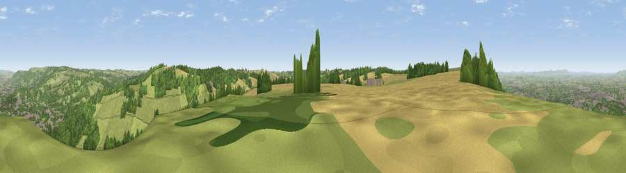

Viewpoint near Leckhampton
#4328 in England · top 10% of its area beats it · near LeckhamptonThe view, rendered

A 360° render of this exact spot computed from the terrain model, tree cover and land cover — summer colours, afternoon light, calibrated against photographs of famous viewpoints. Real trees, hedges and buildings will differ in detail.
The panorama
Grey silhouette: terrain skyline in each direction (720 bearings, Earth curvature and refraction included). Dashed green: skyline with trees (+15 m) and buildings (+8 m) as obstacles. Blue strip: how far the ground is visible on each bearing.
Where the view opens
Wedge length = distance to the farthest visible ground on that bearing (vegetation-aware). Rings at 10, 25 and 50 km.
What fills the view
40% grassland · 39% woodland · 12% cropland · 9% built-up
Angular shares of the visible panorama (visual magnitude), not map area. Landscape diversity 0.52 (0–1 Shannon).
Key numbers
More beautiful places nearby
The staircase of upgrades: each row has a higher view potential than everything closer. Driving times are estimates from straight-line distance, calibrated against real road routing — check an actual route before setting out.
| Place | Direction | Drive | Score |
|---|---|---|---|
| Viewpoint near Leckhampton | W · 1 km | ~3 min | 73.7 |
| Viewpoint near Leckhampton | W · 1 km | ~3 min | 77.8 |
| Viewpoint near Cleeve Hill | NNE · 8 km | ~16 min | 79.6 |
| Viewpoint near Great Witcombe | WSW · 8 km | ~16 min | 80.5 |
| Nottingham Hill | N · 10 km | ~20 min | 80.9 |
| Viewpoint near Bredon's Norton | N · 21 km | ~36 min | 81.3 |
| Bredon Hill | N · 22 km | ~36 min | 83.0 |
| Millennium Hill | NW · 29 km | ~46 min | 86.9 |
51.86439, -2.05931 · source: screening · position refined by local search. Computed location — check access rights before visiting.